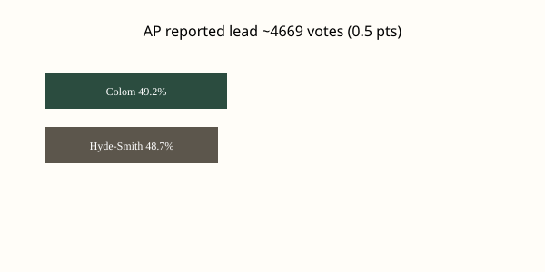

Mississippi · U.S. Senate · 12 November 2026
Scott Colom wins Mississippi’s Senate seat and becomes the state’s first Black senator since Reconstruction.

What is agreed across desks
The Associated Press projected Democrat Scott Colom the winner of Mississippi’s U.S. Senate race on Wednesday, 11 November 2026, after counties reported additional results that included provisional and affidavit ballots. At the time of the call, Colom led Republican incumbent Cindy Hyde-Smith by 4,669 votes out of 962,237 counted, a margin of 0.5 percentage points. Hyde-Smith telephoned Colom to concede the same afternoon and released a statement accepting the outcome. Colom, 43, a district attorney for four counties along the Mississippi-Alabama line and a former federal judicial nominee, is the first Black person elected to the Senate from Mississippi since Blanche Bruce served from 1875 to 1881. The last Democrat elected to a Mississippi Senate seat before this race was John Stennis in 1982. Election Day was 3 November; counting of late ballots continued for more than a week.
AP’s decision rested on the pattern of the remaining updates. Colom won all 12 county updates released on Wednesday, including those in Republican-leaning areas. Jackson County’s addition of 2,173 votes alone expanded the lead past the threshold AP uses for a call when the remaining uncounted ballots cannot mathematically reverse the result under observed trends. Final county certification is due Friday. An independent candidate, Ty Pinkins, received roughly 2.1 percent.
What is only a quote
Colom’s campaign statements about listening to voters and Hyde-Smith’s concession language (“I respect the decision of Mississippi voters”) are personal or political sentences. They are not independent measurements of turnout or of the economic conditions that both campaigns discussed. Descriptions of Colom’s nickname for Hyde-Smith (“Cindy High Prices”) and of tariff effects are campaign framing. Wires quote them as claims; they are not verified by price indexes in the race-call stories.
Mechanism a reader needs
Mississippi elects its senators statewide. The state’s Black population is among the highest in the country, and Democratic performance has historically concentrated in the Delta and in Jackson. Republican margins in the northeast and southeast have been large in recent presidential years; President Trump carried the state by more than 22 points in 2024. A 0.5-point Senate margin therefore requires both high Black turnout and measurable erosion among white voters relative to prior Republican baselines. Provisional and affidavit ballots, which are reviewed after Election Day, often lean Democratic in urban and majority-Black counties; that is the mechanical reason the lead grew after the initial narrow margin on election night.
In 2023 Hyde-Smith withheld her blue slip on Colom’s nomination to a federal district judgeship, effectively blocking the appointment. That episode is part of the biographical record; it is not evidence that any particular county’s ballots were miscounted. Senate control implications are separate: Democratic pickups elsewhere have already moved the chamber, and this seat adds one more. Certification and any possible recount request remain future procedural steps, not current facts.
The photograph above is a type exterior of the state capitol in Jackson. It does not show Colom, Hyde-Smith, or any campaign event. Using it as a visual for the race is a location choice, not an implication that the legislature or the building itself determined the outcome.
What this story is not
It is not a completed certification. It is not a finding of fraud or of machine error. It is not a statement about Colom’s future votes on any bill. The historical “first since Reconstruction” label is demographic and chronological; it does not measure the policy distance between Colom and Bruce. AP’s call is a projection based on the remaining ballot distribution; the official canvass is still the counties’ responsibility until Friday.

Source articles and scores
Images: Wikimedia Commons type photograph of the Mississippi State Capitol (Jackson_Capitol.jpg) via Special:FilePath. Caption states it is not a campaign event. onerror falls back to committed SVG. Chart is original local SVG from reported numbers. No news-agency pixels used as src.